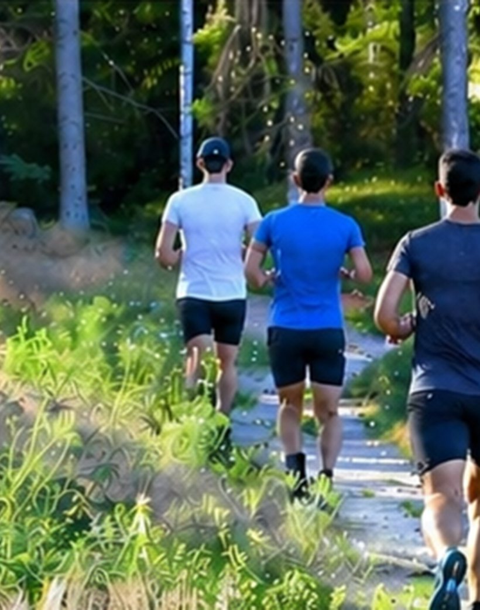
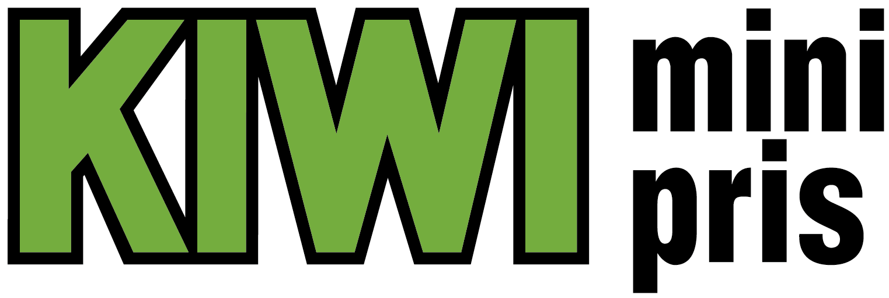
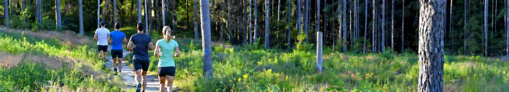
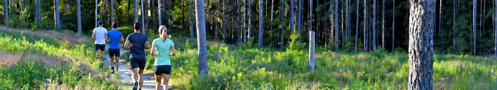

Fem nøkkelskjermer i det nye systemet — mobil-først, med fast app-linje øverst og fanenavigasjon nederst. Én konsistent fargebruk, én komponentstil, store berøringsmål. Bytt aksentfarge og hjørner i Tilpass-panelet.

Ingen forhåndspåmelding — skriv deg på deltakerlista før start. Gratis frukt til alle etter løpet.
22 løpere samlet seg til årets første vinterløp på Kalnessletta. Til tross for minusgrader…
I kveld ble det løpt det 100. Kalnesløpet siden starten i 2022. Markert med kake og diplom…



Over 40 år med fellesskap, frisk luft og gode bein på Kalneskrysset.
Torsdagsløpet starter som et prøveløp, initiert av Bjørn Paulsrud, Ivar Andersen og Eivind Storbugt.
Løpet får sin første avisomtale, og populariteten øker raskt på 80-tallet.
Løpet var svært populært midt på 80-tallet, og de frivillige fikk fullt fortjent SA-kaka.
Løpets grunnlegger og sjel går bort etter å ha ledet løpet siden 1978. Per Prøitz overtar.
Vi løper ikke for å vinne — vi løper for å møtes.
Trykk på en pin for å se stedet langs ruten.
Den første svingen etter 360 meter, der løypa dreier til høyre ut av Lundestadveien. Oppkalt etter den trofaste løperen Raymond Westberg.